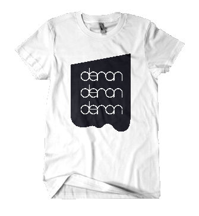

deronderonderonをもっと皆さんに知っていただきたい。
しかし活動費が足りない。
そして 、手元には素敵なTシャツがある。
「そうだ、これ、
買っていただけないかな・・・？」
そう思い、このプロモーションサイトを立ち上げました。
このサイトでは、デロンTシャツを着た著名な方々を、コメントと共に紹介していきます。
頻繁に更新するので、よかったら見てってください！

No.1 イエス・キリスト